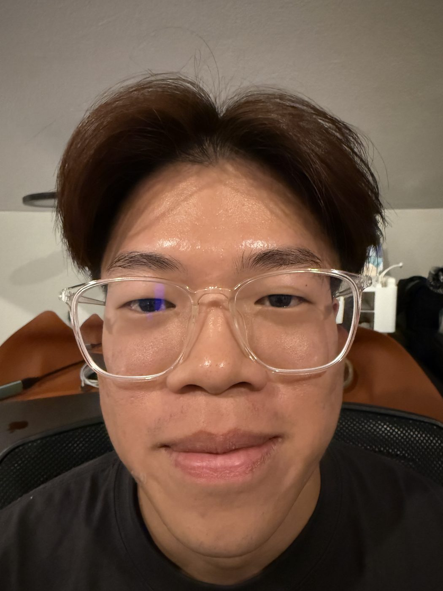
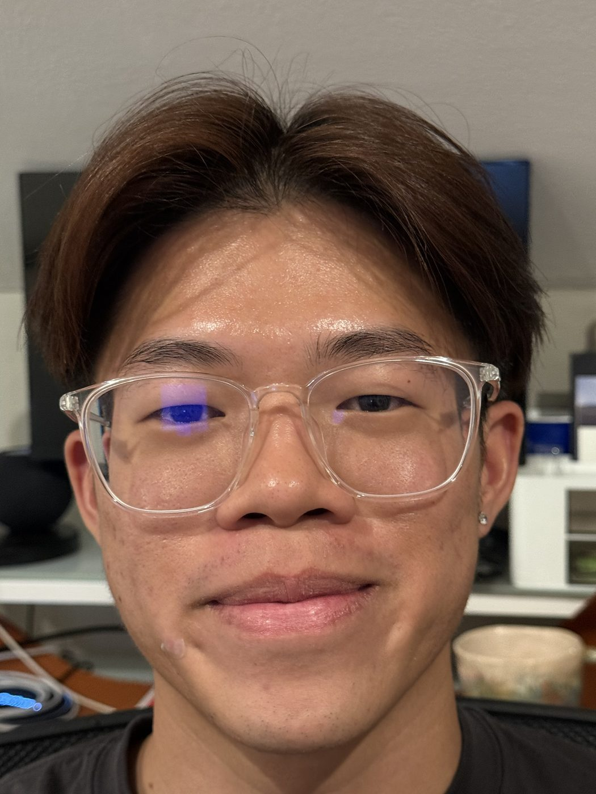
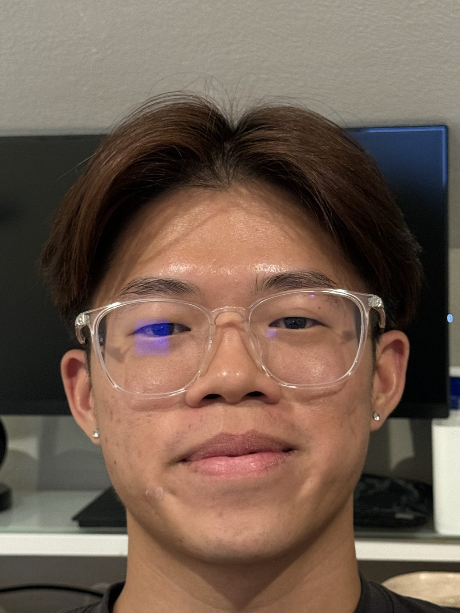
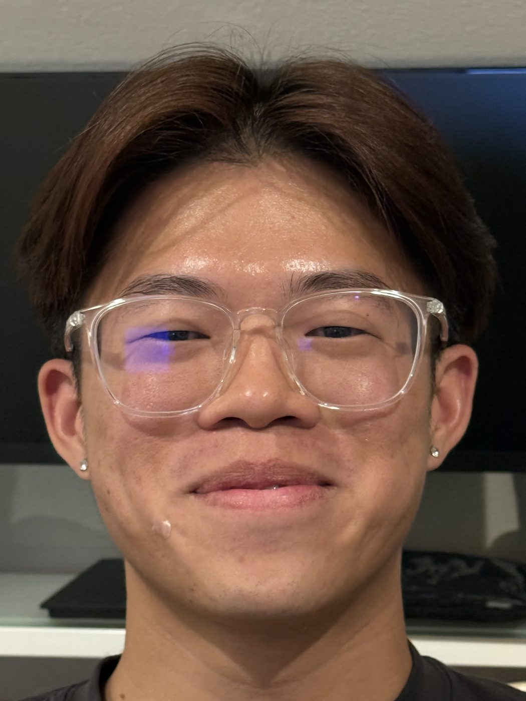
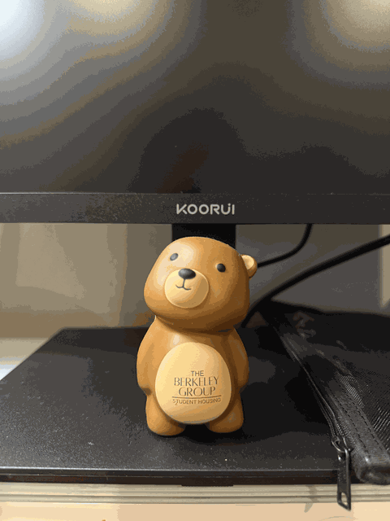

CS180 — Intro to Computer Vision & Computational Photography
In Project 0, I aim to build some understanding and intuition of perspective, focal length / zoom, centre of projection, and their relationships. These subtle aspects of photography quietly determine what a photo looks like.

24mm
52mm
79mm
112mmThe idea. Every lens has a center of projection. Moving the camera, moves that center and reshapes a face or a building even when nothing else in the frame changes.
The method. Three small experiments below, each swapping distance for zoom (or the reverse), done with an iPhone 16 Pro Max and its own EXIF data as the record.
The takeaway. Perspective is a function of where the camera stands, not of the lens alone. Zoom just crops while position does the distorting.
Part 1
First shot: phone at half a foot away, wide lens, 24mm equivalent. Second shot: several feet back, zoomed to 112mm, cropped so the face reads at roughly the same size.
Same face, same room, same evening but very different geometry.
24mm · half a foot's length
Up close, the wide lens has to cover a lot of face in a short distance, so it stretches whatever is nearest — usually the nose — and pushes the ears back and out of frame. It's the same reason a fisheye lens bulges the middle of a photo.
112mm · six feet back
From farther away, every part of the face is close to the same distance from the lens, so the proportions flatten out and look the way they do in a mirror. Zooming in just crops that flatter geometry down to a familiar frame.
Notes
I noticed the colors get increasingly dull as the camera moves further away from my head. I'm not very sure why, but it could be the lack of good lighting in my room when these were taken. The camera loses information as it gets further away from the subject due to the poor lighting?
Part 2
Same trick, run backward, on a building instead of a face. Standing back near the plaza's edge and zooming to 37mm flattens Sproul Hall's columns into a stack of parallel lines. Walking in close and shooting wide at 24mm lets the facade recover its actual depth.
37mm · from the plaza
Far from the building, the columns are all nearly the same distance from the camera, so the lens renders them at nearly the same size. This makes the facade look flat.
24mm · at the steps
Standing at the base, the nearest column is genuinely much closer than the far one, so the wide lens exaggerates that gap, making the building feel three-dimensional again.
Part 3
Hitchcock's trick from Vertigo: walk the camera backward while zooming in, keeping the subject the same size in frame while everything behind it rushes into the distance. Stand-in subject here is a small desk bear!.

6 framesThe bear stays locked to the same size across all six frames, but the desk monitor behind it visibly stretches. This mismatch between a fixed subject and a shifting background is the whole effect.